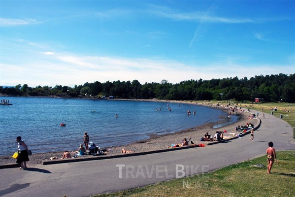
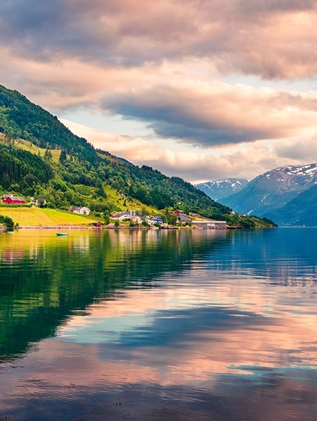

스칸디나비아 반도의 한 나라 바이킹의후예 노르웨이
/
노르웨이의 수도 오슬로 대도시이고 공원도 많으며 사람들이 여유가 넘침 기차역이 잘 발달 되어있다.
노르웨이는 다른거 없다 트레킹,휴식,자전거 노르웨이의 유명한 환상적인 자연풍경을 보도록하자

노르웨이는 수돗물도 맛있음
노르웨이 여행의 단점:물가 비쌈 마트는 한국과 비슷하나 식당과 교통비가 비쌈,날씨 영향을 많이 받는다.성수기는 6~9월
TIP : 면세점 이용-북유럽 국가들의 공항은 대부분 출국시 면세점을 이용 할 수 있게 되어있다. 애주가, 애연가라면 절대 놓치지말고 면세점을 꼭 이용 할 것.